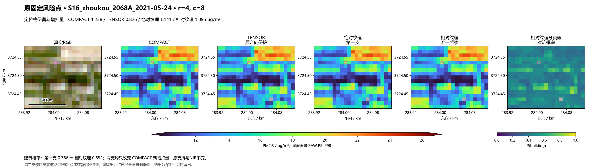
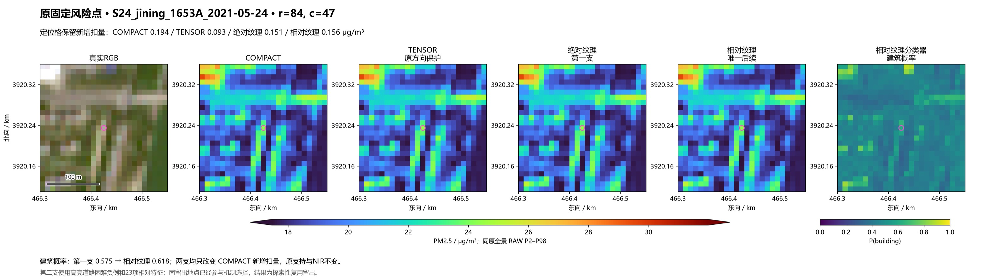
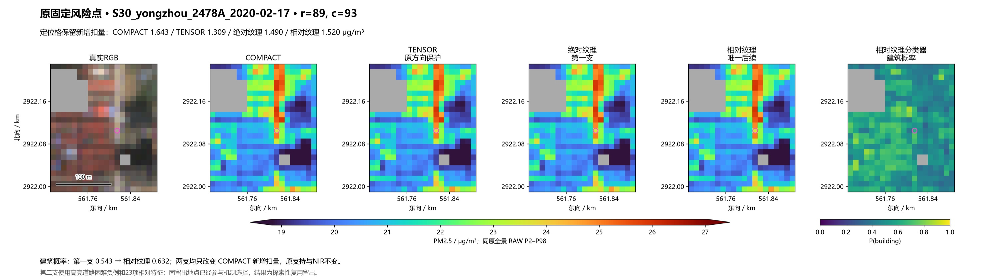
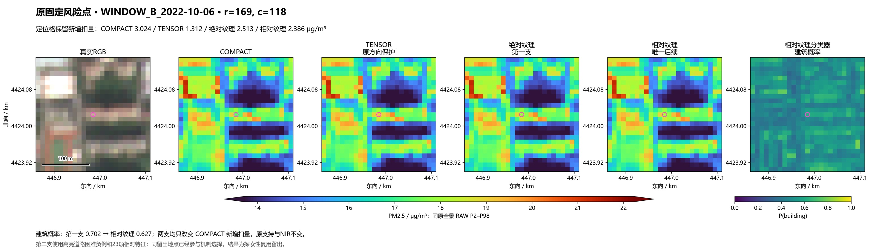
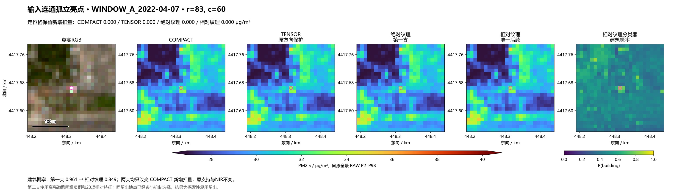
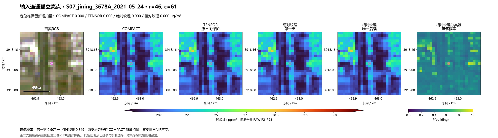
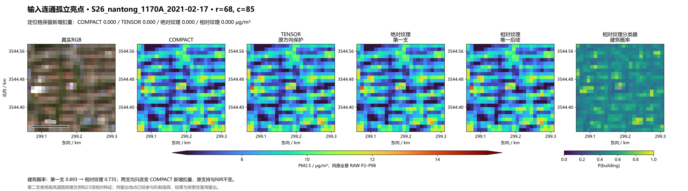

相对纹理 + 高亮道路困难负例
固定23项相对特征，去掉绝对波段和绝对亮度；两类训练样本同时限制为高亮，实际训练亮道路4574行、亮建筑13812行。仅一次新输入分类器拟合、零PM头拟合；206场全部完成。第一支结果完整保留。
同10地点探索性复用留出：亮道路误判建筑由97.72%降至19.82%，但亮建筑召回也由99.76%降至59.72%；道路/建筑平均概率仅0.454/0.563，仍有混淆。
全4171变化格退回COMPACT新增扣量：旧TENSOR 38.12%，本支 19.88%。原231地图交格退回21.15%，仍弱于旧TENSOR的37.19%道路保护。它是缓解强度与细节之间的候选权衡，未证明真实10米PM精度提高。
下面仍为原先锁定的四风险点与三输入连通孤立亮点，不因本轮结果换位置。三个对照本来无COMPACT新增处理，保持不变不等于分类成功。
S16_zhoukou_2068A_2021-05-24
新增扣量：TENSOR 0.826 / 绝对纹理 1.141 / 相对纹理 1.095 μg/m³。


S24_jining_1653A_2021-05-24
新增扣量：TENSOR 0.093 / 绝对纹理 0.151 / 相对纹理 0.156 μg/m³。


S30_yongzhou_2478A_2020-02-17
新增扣量：TENSOR 1.309 / 绝对纹理 1.490 / 相对纹理 1.520 μg/m³。


WINDOW_B_2022-10-06
新增扣量：TENSOR 1.312 / 绝对纹理 2.513 / 相对纹理 2.386 μg/m³。


WINDOW_A_2022-04-07
新增扣量：TENSOR 0.000 / 绝对纹理 0.000 / 相对纹理 0.000 μg/m³。


S07_jining_3678A_2021-05-24
新增扣量：TENSOR 0.000 / 绝对纹理 0.000 / 相对纹理 0.000 μg/m³。


S26_nantong_1170A_2021-02-17
新增扣量：TENSOR 0.000 / 绝对纹理 0.000 / 相对纹理 0.000 μg/m³。
